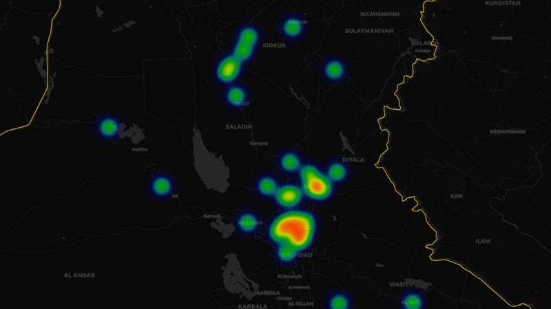
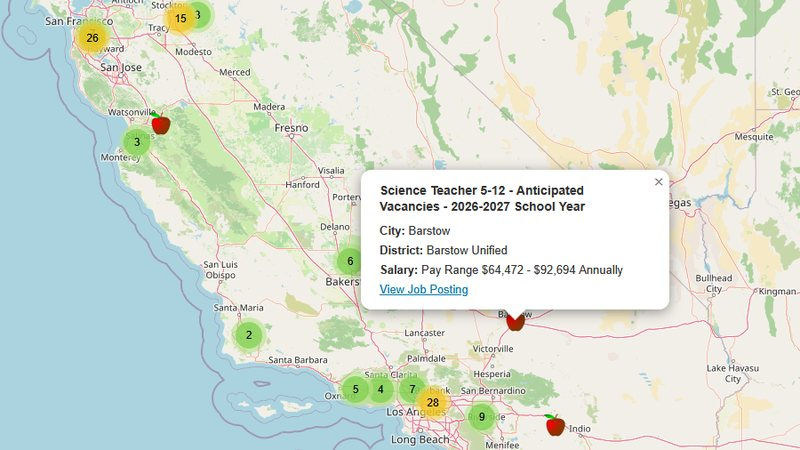
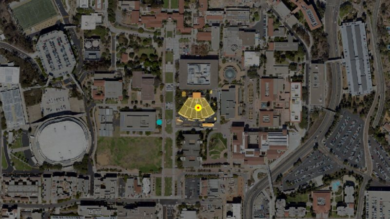
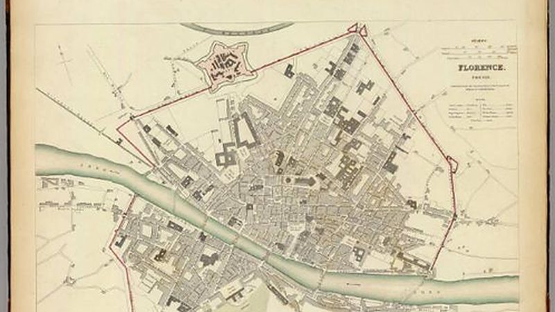
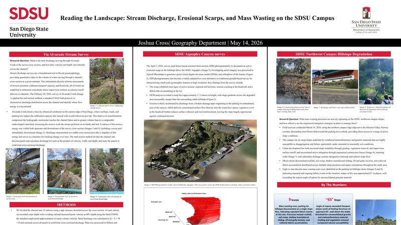
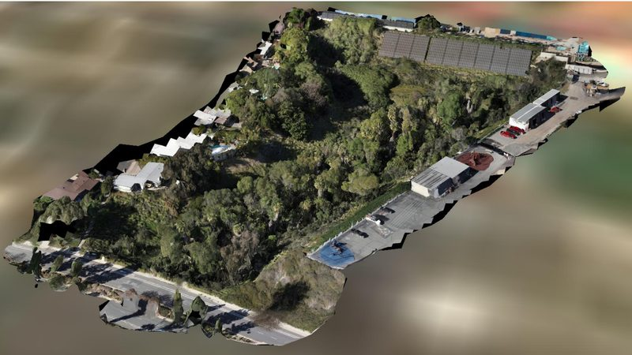

A collection of my geospatial analysis and visualization work, demonstrating skills in web mapping, data integration, spatial analysis, and storytelling with maps.

Comprehensive data visualization dashboard analyzing 1.8M+ significant military activities in Iraq (2003-2011) and Afghanistan (2008-2014). This project was designed to map events accurately in time and space to enable veterans and support networks to contextualize traumatic events by allowing the veteran to view events from a geospatial lens. Features interactive geographic mapping with heatmap visualization, temporal analysis showing daily incident patterns, and statistical breakdowns by incident type and category. Built with server-side architecture for efficient data processing and responsive client-side rendering.
Technologies: Node.js/Express, JavaScript, Leaflet.js, ApexCharts, REST APIs
Highlights: Server-side data processing, multi-chart dashboard, temporal heatmaps, responsive design
View Dashboard →
Full-stack web application that visualizes education and GIS job opportunities across California. Features real-time API integration with Adzuna and EDJoin job databases, dynamic search functionality, custom markers, and interactive popups displaying job details including salary ranges and locations.
Technologies: JavaScript, p5.js, Leaflet.js, Node.js, MongoDB, REST APIs
Highlights: Real-time data integration, responsive design, custom backend deployment
View Live Map →
Interactive campus map developed for San Diego State University, featuring building locations, campus facilities, and navigation tools. Designed to help students, faculty, and visitors navigate the campus effectively.
Technologies: JavaScript, p5.js, Leaflet.js, Spatial Data Collection
Skills Applied: Cartographic design, user experience, data accuracy
View Interactive Map →
Interactive StoryMap exploring the history, culture, and geography of Florence, Italy. Combines historical research with modern mapping techniques to create an engaging narrative experience about this Renaissance city.
Technologies: ArcGIS StoryMaps, Historical Research, Multimedia Integration
Focus: Narrative cartography, cultural geography, visual storytelling
View StoryMap →
Final academic poster for GEOG 401 Geomorphology, documenting field surveys across three SDSU campus sites: Alvarado Creek stream discharge, UAV-derived SfM photogrammetry of the Aquaplex Canyon erosional scarp, and northwest campus hillslope mass wasting assessment. Synthesizes LiDAR, drone photogrammetry, and 3D valley volume modeling into a single formal deliverable.
Technologies: ArcGIS Pro, Agisoft Metashape, R (terra, sf, rgl), UAV SfM
Highlights: Three integrated field methods, 191,139 m³ volume estimate, GEOG 401 final deliverable
View Poster →
Geomorphic analysis of Aquaplex Canyon at San Diego State University using 1-meter USGS LiDAR-derived DEM data and UAV photogrammetry. The project quantifies valley volume through a custom east-west reference surface model, drapes a hillshade over an interactive 3D terrain visualization, and documents the canyon's erosional history and sediment dynamics.
Technologies: R (terra, sf, rgl), ArcGIS Pro, ArcGIS StoryMaps, UAV Photogrammetry
Highlights: 191,139 m³ valley volume estimate, interactive 3D wireframe, LiDAR analysis
View StoryMap → View 3D Model →